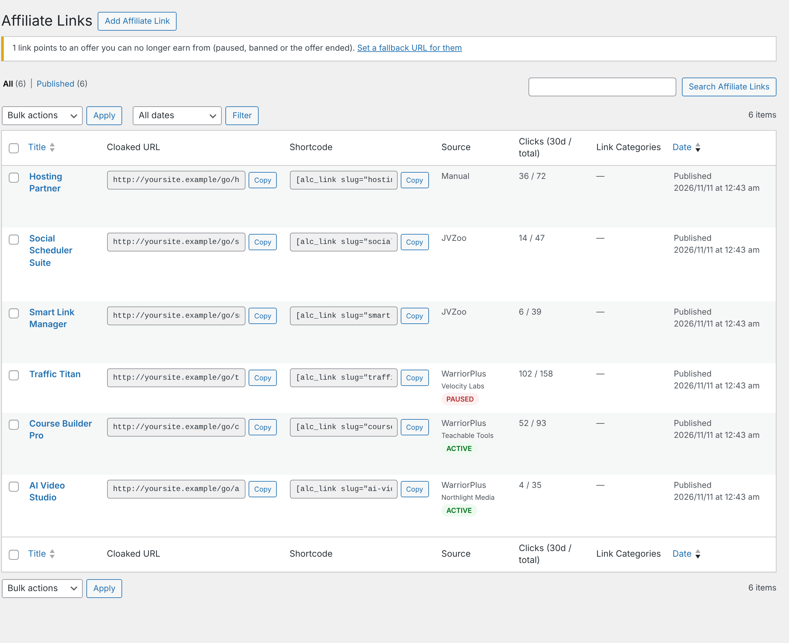
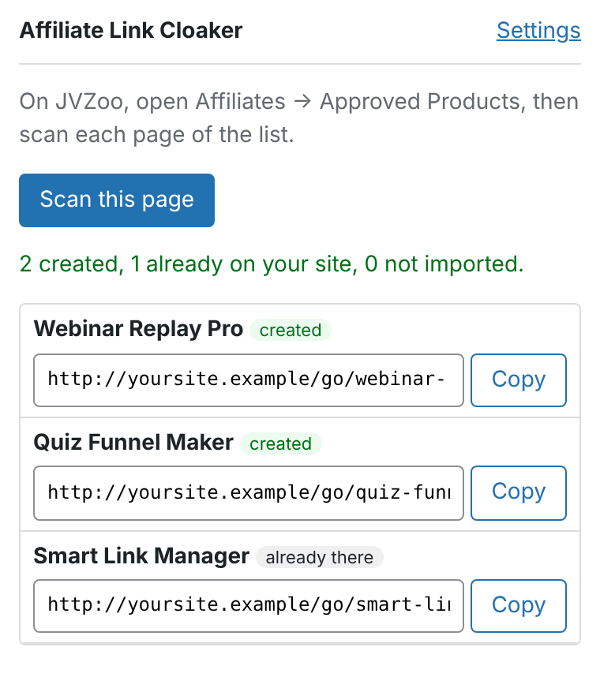

WordPress plugin · WarriorPlus & JVZoo
Your affiliate offers, as clean links on your own site.
Affiliate Link Cloaker pulls in the offers you're approved to promote and turns each one into a short, trackable link like yoursite.com/go/ai-video-studio/. Use it in posts, emails, social media and ads.

Everything an affiliate link needs
Import offers instead of copying links by hand, and keep them working after you've shared them.
Import, don't copy
See your WarriorPlus offers straight from its API, or let the browser extension read your approved JVZoo products. Tick the ones you want and every link is created at once.
Links that stay current
A twice-daily sync picks up changed affiliate links and renamed offers, and warns you when you've been paused or an offer has ended.
Never send traffic nowhere
Set a fallback page, and clicks on dead offers go there instead of to an offer that won't pay you.
Know what's working
Clicks per link for the last 7 and 30 days, with sub-IDs such as /go/offer/facebook/ to see where they came from. Bots and link checkers aren't counted.
Use them anywhere
Copy the cloaked URL for emails and social posts, or the shortcode for your posts and pages. Both have a Copy button.
Private and tidy
IP addresses are stored only as hashes. Uninstalling removes everything, but only if you ask it to.
Supported networks
Links from any network can be pasted in by hand. These networks get extra help.
WarriorPlus
Add your API key and the plugin lists every offer you're an affiliate for, with an Approved only filter. It uses the same link as WarriorPlus's "Get Link" button.
- One-click import from your offers list
- Sync updates links, names and statuses
- Flags offers you've been paused from
JVZoo
JVZoo's API only covers vendors, so the browser extension reads your Approved Products page while you're signed in and sends the products to your site.
- Product names filled in automatically
- Sub-IDs passed to JVZoo as tracking IDs
- The same product is never added twice
Pick offers, get links
- Connect WarriorPlus. Paste your API key from WarriorPlus → My Account → API Key.
- Choose offers. Import Offers lists everything you're approved for, with vendor, status and launch date.
- Share the links. Each offer gets a cloaked link on your site, ready to copy.

JVZoo in one click
The Affiliate Link Cloaker extension for Chrome, Edge and Brave reads your JVZoo Approved Products page while you're signed in. One click creates the cloaked links on your site. Your JVZoo login never leaves your browser.

Get started
- Download aff-link-cloaker-x.y.z.zip from the latest release.
- In WordPress, go to Plugins → Add New → Upload Plugin, choose the zip, then Activate.
- Follow the guide to connect your networks and create your first links.